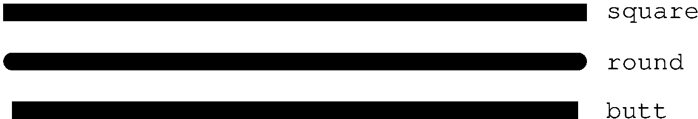
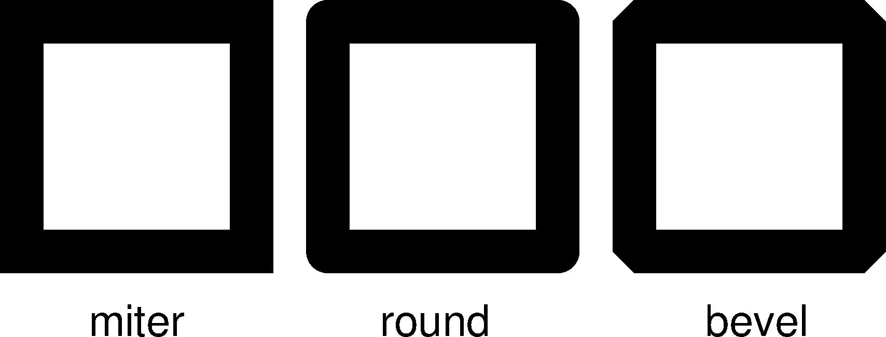

10.10 PS参数¶
本节列出所有与PS相关的参数，参数的默认值在中括号内列出。
- PS_CHAR_ENCODING
字符集编码方式 [
ISOLatin1+|Standard+]GMT使用的字符集编码方式。可选值包括：
StandardStandard+ISOLatin1ISOLatin1+ISO-8859-x（x取值为1-10或13-15）
若安装GMT时使用SI单位制，则默认值为ISOLatin1+编码；否则使用Standard+编码。
- PS_COLOR_MODEL
生成PS代码时颜色所使用的色彩模型 [
rgb]可以取RGB、HSV、CMYK或GRAY。若设置为HSV，其不会影响绘图过程中使用RGB指定的颜色；若设置为GRAY，则所有的颜色都将使用YIQ方法转换成灰度。
- PS_COMMENTS
生成的PS代码中是否包含注释信息 [false]
若为
true，则生成的PS文件中会包含注释，用于解释文件中操作的逻辑，当你需要手动编辑PS文件时比较有用。默认情况下，其值为false，即PS文件中不会包含注释，此时生成的PS文件更小。
- PS_LINE_CAP
控制线段的端点的绘制方式 [
butt]可以取如下值：
butt：不对端点做特殊处理，即端点是矩形（默认值）round：端点处为直径与线宽相等的半圆弧square：端点处为边长与线宽相等的半个正方形
下图展示了该参数取不同值时线段端点的区别。需要注意，图中三条线段的长度是相同的，但因参数设置不同而导致线段看上去长度不同。

- PS_LINE_JOIN
控制线段拐点的绘制方式 [
miter]可以取
miter、round、bevel下图展示了
PS_LINE_JOIN取不同值时线段拐点的绘图效果。当线宽较小时，几乎看不出来区别，这里为了显示的效果，将线宽设置为20p。
- PS_MITER_LIMIT
设置mitered拐点的角度阈值 [35]
当两个相交的线段之间的夹角小于该阈值时，则该拐角会被bevelled而不是被mitered。该参数的取值范围为0到180。若设置为0，则使用PS的默认值（11度），若设置为180，则所有拐角都会被beveled。
- PS_MEDIA
设置当前纸张的尺寸 [a4|letter]
下表列出了GMT预定义的若干种纸张尺寸及其对应的宽度和高度（单位为points）。
GMT预定义纸张大小¶ Media width height Media width height A0 2380 3368 archA 648 864 A1 1684 2380 archB 864 1296 A2 1190 1684 archC 1296 1728 A3 842 1190 archD 1728 2592 A4 595 842 archE 2592 3456 A5 421 595 flsa 612 936 A6 297 421 halfletter 396 612 A7 210 297 statement 396 612 A8 148 210 note 540 720 A9 105 148 letter 612 792 A10 74 105 legal 612 1008 B0 2836 4008 11x17 792 1224 B1 2004 2836 tabloid 792 1224 B2 1418 2004 ledger 1224 792 B3 1002 1418 B4 709 1002 B5 501 709 用户还可以用
WxH的格式完全自定义纸张尺寸，其中W和H分别为纸张的宽度和高度。比如12cx12c表示纸张为宽度和高度都为12厘米。若某些尺寸经常使用，用户还可以自定义纸张格式，只需要新建或编辑
~/.gmt/gmt_custom_media.conf即可，文件格式也很简单:# 纸张格式名 宽度 高度 paper1 2000 3000 paper2 3000 0
纸张高度为0，表示纸张可以向上无限延展。
- PS_PAGE_COLOR
- 设置纸张的背景色 [
white]
- PS_PAGE_ORIENTATION
设置纸张方向 [
landscape]可以取
portrait或landscape。
- PS_SCALE_X
绘图时X方向的全局比例 [1.0]
用于实现图像的整体缩放。
- PS_SCALE_Y
绘图时Y方向的全局比例 [1.0]
用于实现图像的整体缩放。
- PS_TRANSPARENCY
设置生成PS文件所使用的透明模式 [Normal]
可取值包括Color、ColorBurn、ColorDodge、Darken、Difference、Exclusion、HardLight、Hue、Lighten、Luminosity、Multiply、Normal、Overlay、Saturation、SoftLight、Screen
- PS_IMAGE_COMPRESS
设置PS中的图像压缩算法 [deflate,5]
可以取值为：
rle：Run-Length Encoding schemelzw：Lempel-Ziv-Welch compressiondeflate[,level]：DEFLATE compression，level可以取1到9；none：不压缩，相当于deflate,5。